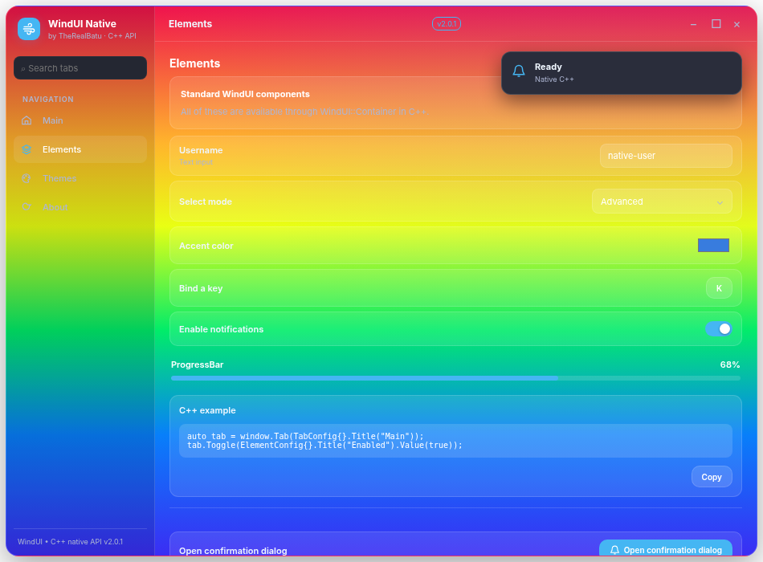
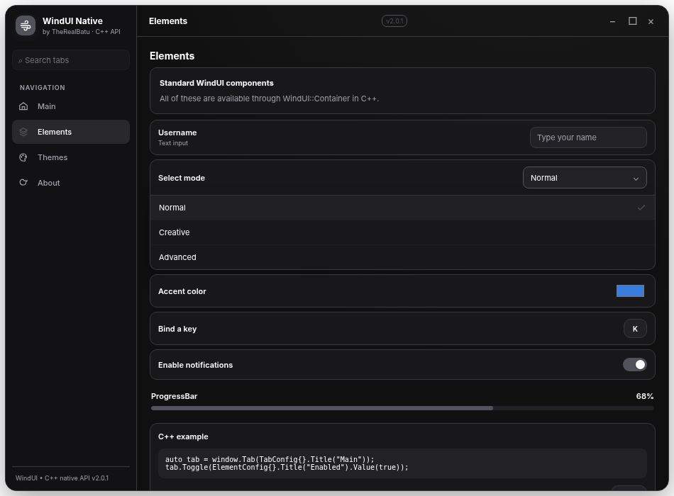

WindUIBE · C++ API Documentation#
WindUIBE v2.0.1 is an unofficial C++17-first adaptation of the Roblox WindUI user interface style for Minecraft Bedrock on Android with Levi Launchroid. The library's C++ API builds the UI model and receives callbacks. The rendered interface is an offline Android WebView using HTML/CSS/JavaScript, connected to C++ through a small embedded Java DEX class.
Compatibility note: The ARM64 module, package, embedded DEX and browser interactions were verified offline; no physical-device Minecraft/Levi Launchroid test was completed. Do not interpret
minecraft_versionsas a tested compatibility list.
At a glance#
| Area | C++ API | Renderer | Parity with Roblox |
|---|---|---|---|
| Windows and topbar | Yes | Yes | Partial |
| Tabs, sidebar sections | Yes | Yes | Partial |
| Nested sections, groups, HStack/VStack | Yes | Yes | Partial |
| Button, Toggle, Checkbox, Slider, Input | Yes | Yes | Partial |
| Dropdown (in-GUI, no Android picker) | Yes | Yes | Partial |
| Colorpicker, Keybind, Image, Code, ProgressBar | Yes | Yes | Partial |
| Dialog, Popup, Notify | Yes | Yes | Partial |
| Themes (minimal + advanced slots) | Yes | Common CSS slots | Partial |
| Localization, key system, assets, resizing | Exposed | Limited | Partial / stub |
Roblox Instance, UDim2, Color3, rbxassetid:// |
No native Roblox types | N/A | Not supported |
Repository layout#
include/WindUI.hpp C++17 fluent API
include/WindUI.h exported C ABI
src/loader.cpp JNI/Android overlay implementation
src/Bridge.java reference for minimal embedded DEX bridge
src/demo.cpp C++ demo: Main / Elements / Themes / About
assets/windui.js offline WebView renderer + event handling
assets/windui.html static offline document / CSS shell
tools/make_bridge_dex.py generate minimal Dalvik DEX
build.sh NDK ARM64 build + levipack packaging
tests/ offline tests and host mock
examples/ API usage and theme samples
docs/ Markdown and GitHub Pages documentation
The loader's hardcoded wildcard signature is diagnostic only; there is no memory patching or Minecraft gameplay hook.
Start here#
Read Quick start, then Windows & tabs and Elements. Use Themes for minimal and advanced theme configuration, Dialogs for overlay messages, and Build & support for compilation and limitations.
Interface preview#

The screenshot was generated by an offline browser test, not captured on a real Android device.

The v2.0.1 menu expands beneath its control inside the WindUI panel rather than using Android's system selection screen.